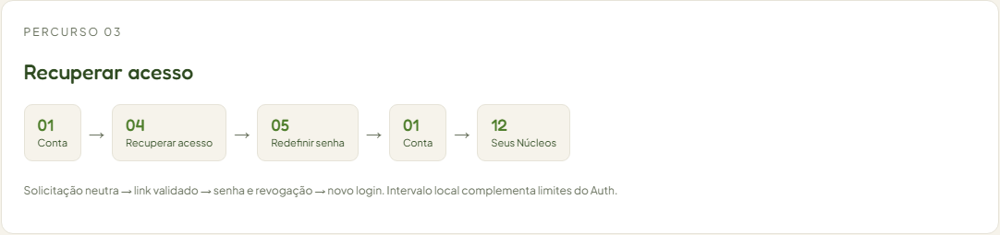
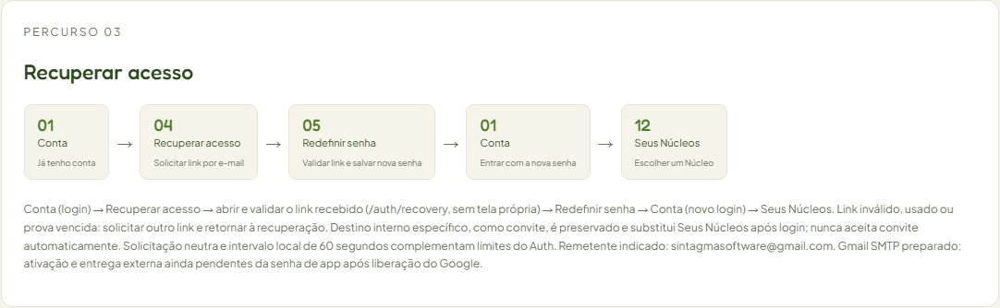
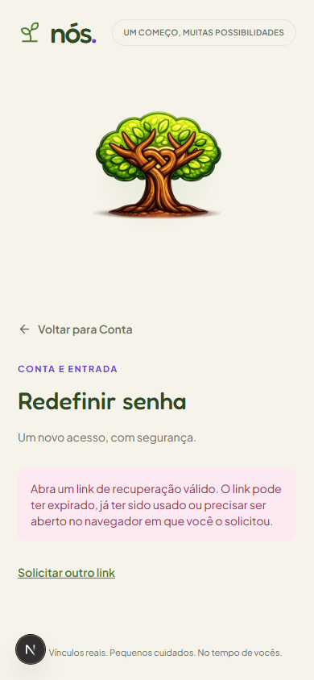
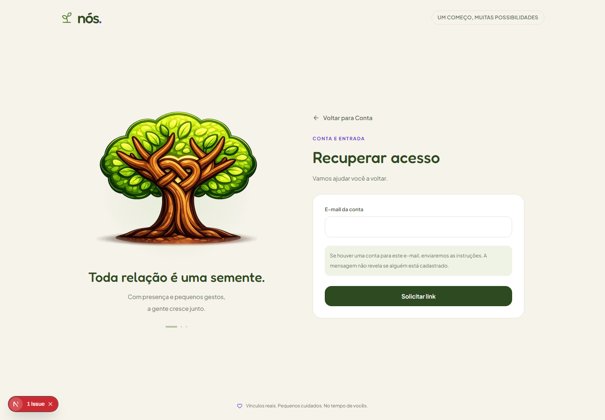
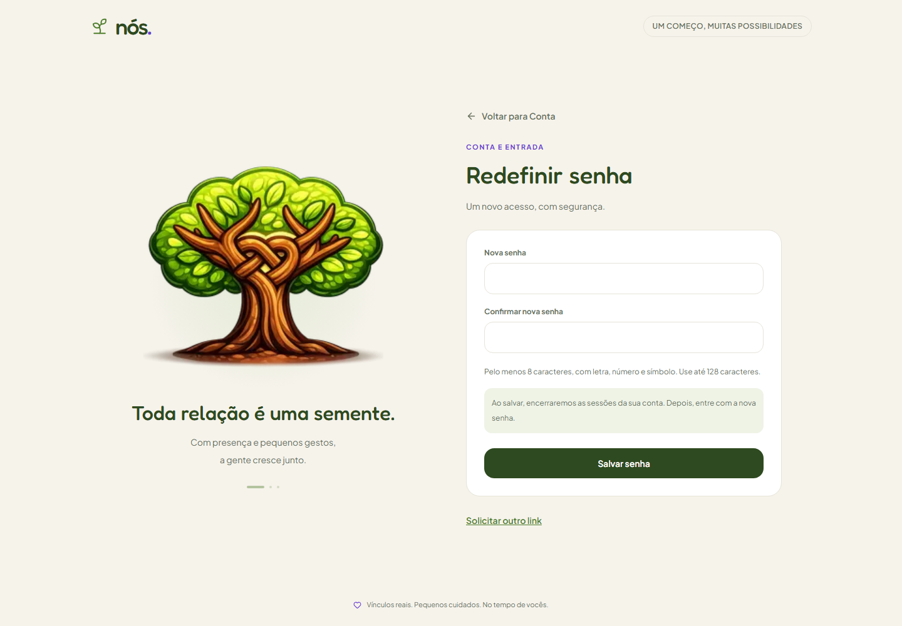

Percurso 03 — Recuperar acesso
Comparação de 09/10/2026 · aplicativo v0.13.2. A sequência mantém os IDs estáveis 01 → 04 → 05 → 01 → 12. As duas passagens por Conta agora indicam login inicial e entrada com a senha nova. O link recebido é validado por /auth/recovery antes de liberar a redefinição; essa rota não tem uma tela própria. Convite ou outro destino interno permitido substitui Seus Núcleos quando solicitado.


Voltar para Conta nas telas de confirmação/recuperação abre a aba Já tenho conta e preserva o destino interno. Antes, abria Criar conta. Entradas com credenciais repetidas ou misturadas são rejeitadas antes do Auth; a verificação local confirmou que o token legítimo continua utilizável após essa rejeição.
A composição principal foi preservada. A diferença funcional do retorno é demonstrada pelos testes de navegação; uma captura estática do botão não mostra a mudança da aba de destino. As capturas reais são da integração com conta temporária no Supabase local, removida após o teste.



Limite operacional: remetente indicado sintagmasoftware@gmail.com; Gmail SMTP preparado com configuração isolada e comando de prompt oculto. Ativação aguarda senha de app, bloqueada pelo Google até confirmação com fator/dispositivo registrado por pelo menos sete dias. Recebimento externo ainda não comprovado. A caixa de teste local comprova integração, sem envio de mensagens externas. O Atlas é uma prévia offline: não envia e-mails nem altera senhas. Roteiro de configuração Gmail.